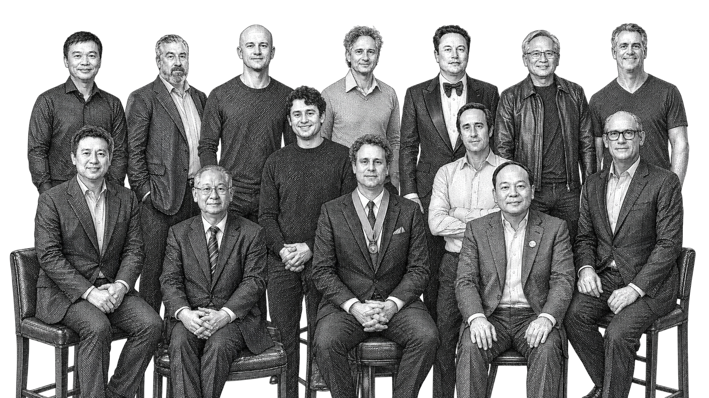
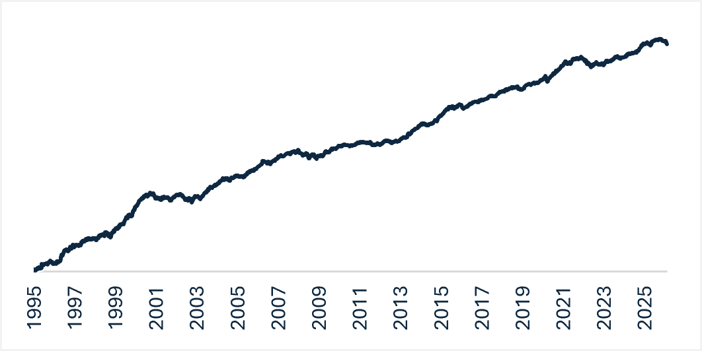

The Founders’ Advantage
Why Founder-Led Companies Drive Superior Long-Term Returns
Building a durable and profitable business in a rapidly shifting landscape demands more than a compelling strategy or innovative products. Business models and sectors matter, but the real differentiator is leadership. Across industries and market cycles, one pattern remains strikingly consistent: founder-led companies outperform those run by professional management.
Academic studies and our proprietary analysis reinforce this. Within the S&P 500, companies with founders still deeply involved have outperformed their peers tenfold over the last 30 years. The explanation is straightforward — founders think, operate, and lead differently. They tend to exhibit greater resilience during downturns and capture more upside during expansions.
At Ziller Funds Management, founder-driven leadership is the cornerstone of our investment philosophy. We invest exclusively in high-growth companies led by exceptional founders because this is where long-term value creation resides.
Exposure to Winners: Where Long-Term Wealth Is Created
Market wealth creation is extraordinarily concentrated. Hendrik Bessembinder’s landmark study (1990–2020) found that half of all global market wealth creation is powered by a small subset of standout companies. Within this group, our research suggests half of the value was generated by founder-led businesses, despite representing only 11–12% of companies in the index. Their disproportionate influence on returns is remarkable. Bessembinder also concluded in a US market study (1925–2023) that 52% of U.S. stocks delivered negative lifetime cumulative returns, underscoring the importance of selectivity. NVIDIA, Netflix, Amazon, and Axon exemplify this pattern: founder-built and engineered to excel through both crisis and opportunity.
Why Founders Win
Founders possess a rare combination of vision, ownership, resilience, and mission-driven focus. Chris Zook (2016) described these traits as the “Founder Mindset,” a leadership DNA that shapes a company’s culture and cascades through the entire organisation. He highlights that their frontline obsession empowers employees closest to customers. A powerful example is M. S. Oberoi of Oberoi Hotels, who well into his nineties, with his eyesight so poor that his nose almost touched the paper, handwrote responses to guest comment cards.
That simple act became cultural doctrine: the guest comes first; leadership is service.
Founders pair this customer obsession with an owner’s mindset — cutting bureaucracy, allocating capital decisively, and safeguarding long-term interests. They also operate with business insurgency: a mission-driven energy that pushes them to challenge norms, reshape industries, and win loyalty by solving what incumbents overlook.
How We Harness This Advantage
The Ziller Global Fund is designed to harness the founder-led advantage by identifying founders with the discipline, adaptability, and conviction to build extraordinary businesses over decades. To operationalise this, we developed a proprietary founder-led index — our global hunting ground for ideas. This diversified equity universe is curated exclusively for founder-led businesses and has delivered approximately 7% p.a. alpha versus broad markets over the long term, aligning with both corporate and academic evidence supporting the outperformance of founder-led businesses.
Not All Founders Excel
Being a founder alone is no guarantee of success. The gulf between exceptional founders and poor ones is wide. Some founder-led firms stagnate, become bureaucratic, erode competitive advantages, or resist technological change — particularly in the age of AI. We avoid these. Our investment process applies both qualitative filters and a quantitative checklist so that we only focus on the best founders: we look for aligned, purpose-driven founders with the courage to challenge the status quo and the track record to prove it.
Surviving and Thriving: Why Resilient Founders Excel
Founders are often admired for their vision, but it is their resilience that truly distinguishes the exceptional ones. The leaders we back are not newcomers to turbulence; they are seasoned navigators who have steered their companies through multiple downturns and emerged stronger.
While the median global CEO tenure is about 4.8 years, founders in our portfolio average 19 years at the helm.
Over time, they have weathered failures, strategic pivots, and recoveries — building organisational “muscle memory” that becomes invaluable in volatile environments. For example, Mercado Libre founder Marcos Galperin endured the dot-com crash by making difficult strategic cuts, refocusing on core markets, and forging a crucial alliance with eBay. These decisions not only ensured survival but laid the foundation for long-term dominance. Every founder we back has their own version of this story. Our 30-year Founder Index reflects this repeatedly: exceptional founder-led companies weather downturns better and rebound faster.

Sourcing Strong Businesses with Structural Tailwinds
Behind every high-performing founder in our portfolio is a business with a resilient economic architecture: a growing economic moat, structural tailwinds, capital-light efficiency, limited competition, large addressable markets, and accelerating earnings. These traits typically manifest in high incremental return on equity — the fuel for long-term compounding.
Margin of Safety
Valuation is the final step in our process. We seek companies with a high risk-adjusted Total Rate of Return (TRR). A high TRR expands the margin of safety in the purchase price and reduces the risk of future loss.
The Ziller Global Fund Advantage
Through the Ziller Global Fund, investors gain intentional exposure to the rare founders who consistently deliver outlier outcomes. We are not speculating on untested management teams; we are partnering with proven survivors and builders. Our investment process is deliberately people-first because we believe long-term compounding begins with the calibre of the person at the helm. These are not ordinary leaders. They are the engines of long-term market wealth creation.
Please note that these are the views of the writer and not necessarily the views of Ziller. This article does not take into account your investment objectives, particular needs, or financial situation.